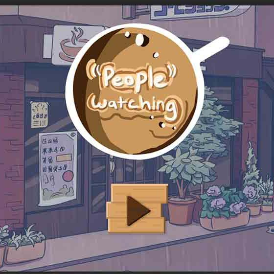
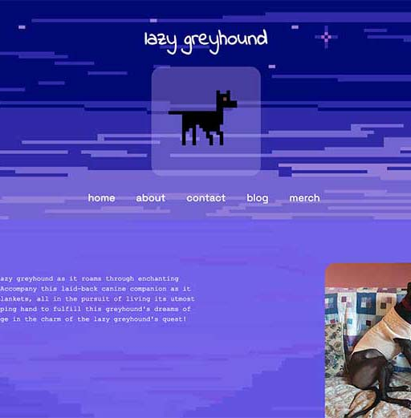

"People" Watching

In the midst of the 2023
Level Her Up
48h Game Jam, Goya played a key role in bringing "People" Watching
to life. Inspired by the simple act of observing café life, she
delved into the world of C# coding using Unity and Yarn Spinner to
create the narrative game based on the theme of 'connection'.
Beyond the coding challenges, Goya also created the game's
atmospheric theme music, adding a personal touch to the project.
lazy greyhound

What began as a conceptual exercise in web design evolved into
lazy greyhound
game website, a tangible website that mirrors the love for these
elegant canines and the allure of cozy games.
The website's construction posed an intriguing challenge—an HTML/CSS
framework built with a single div, emphasizing the significance of
semantics and design opportunities.